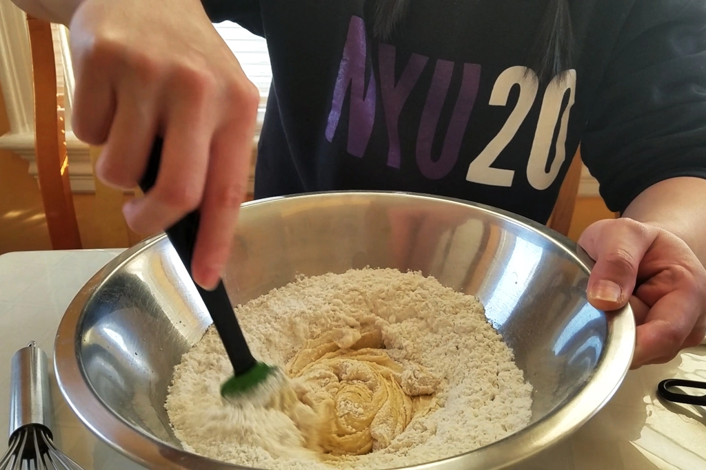
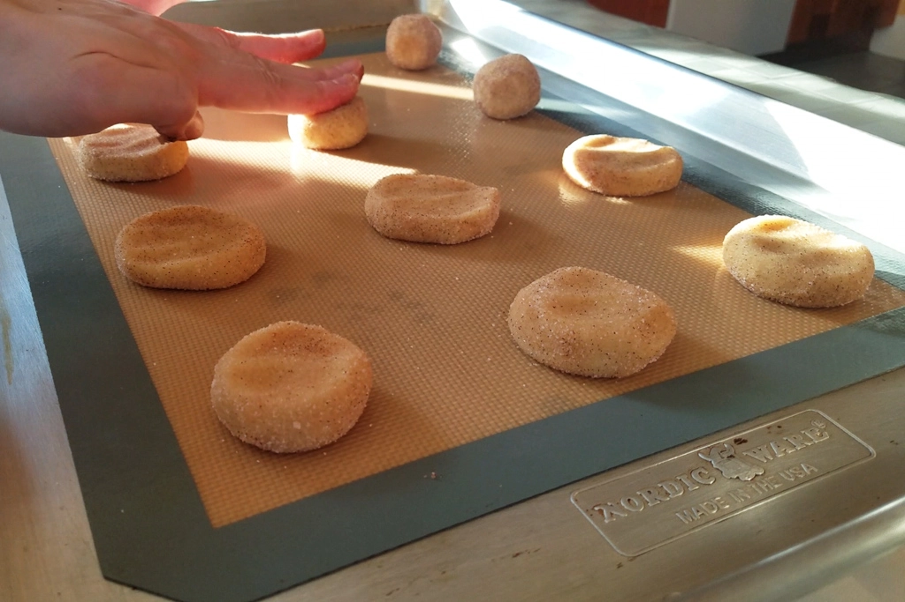
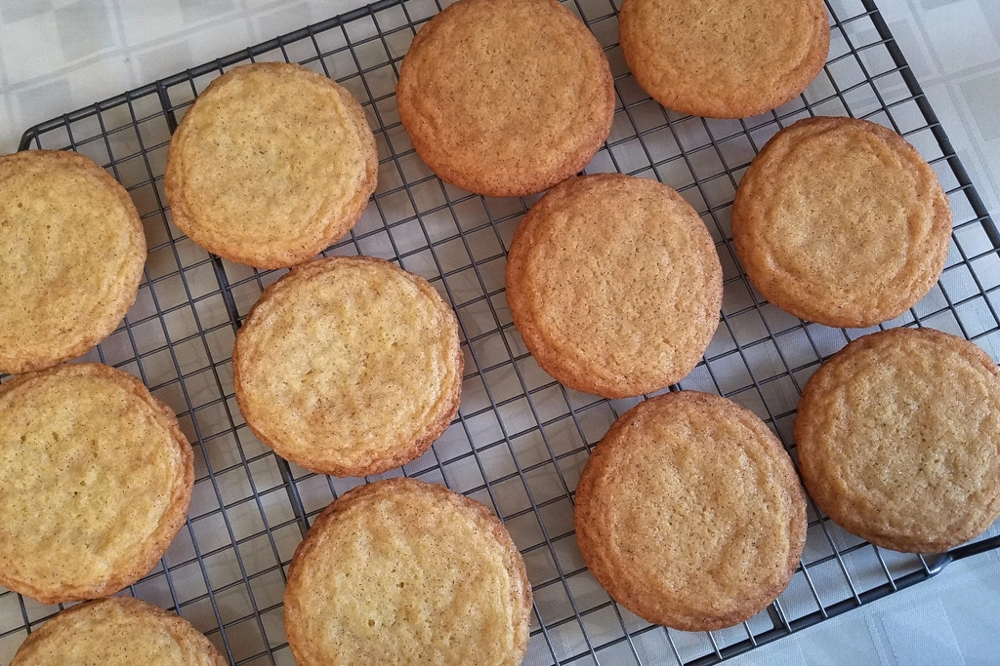
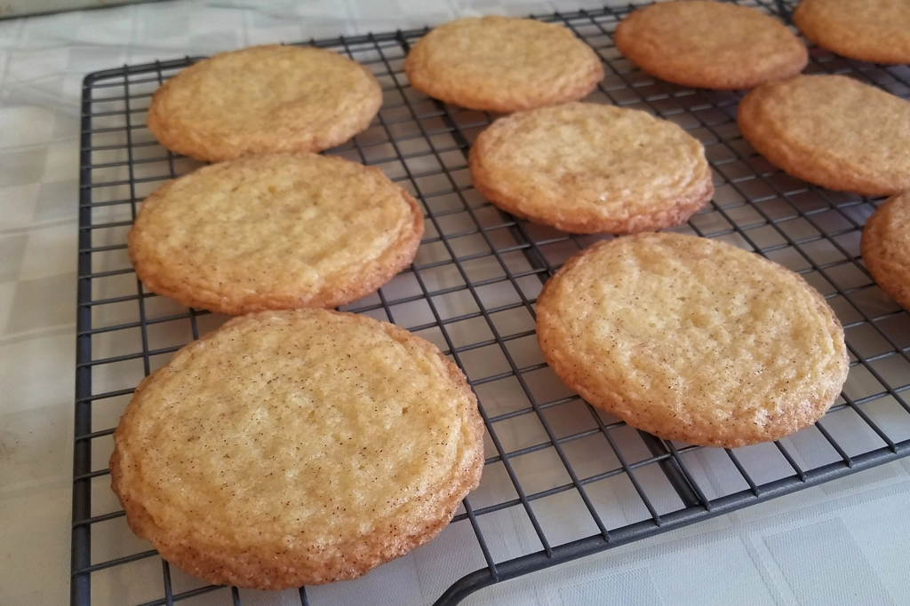
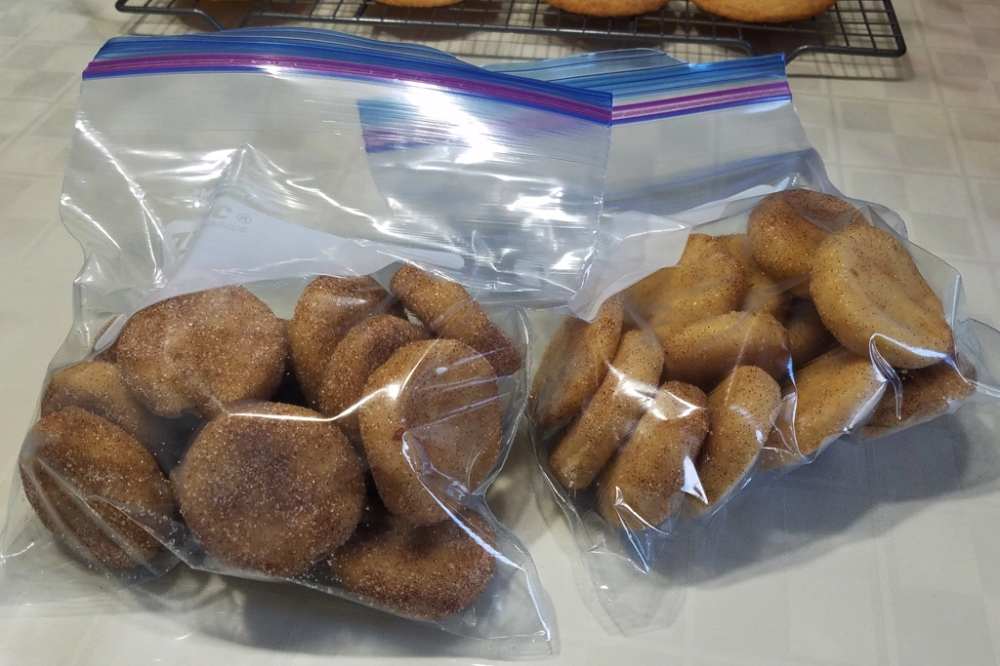
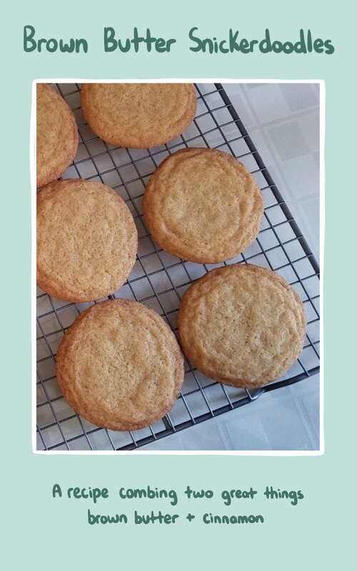
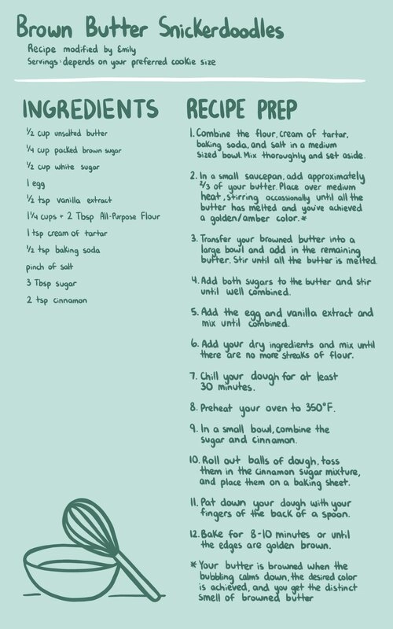

Recipe Testing: Brown Butter Snickerdoodles
Jan 7 - Written by Emily
There are two things I love in baking, brown butter and cinnamon. So, as I have been meaning to make Snickerdoodles for awhile now, this was the perfect time to combine the two and make the ultimate Snickerdoodle.
Like much of the other baking I do, there isn’t a whole lot of planning that goes into this. I started out with a basic Snickerdoodle recipe from a friend of mine and I substituted the butter for brown butter and the white sugar for a mix of brown sugar and white sugar. Now this may not seem like a big change but with baking, switching things up like this can make a huge difference.
The process for making these cookies is fairly simple and is like most cookie recipes, combine all of your dry and wet ingredients in separate bowls and then add the dry into the wet. So, I began with prepping everything before browning my butter in a small saucepan. After the butter was browned (potentially a little too brown), I added in the remaining butter until it was melted and combined. I then went with a 1:2 ratio for brown sugar to white sugar because that felt appropriate to me. I think in other recipes it’s usually a 1:1 ratio but hey, we’re recipe testing here so it’s okay to try something different.
After the sugar was all combined, I added in the egg and vanilla extract before adding in all the dry ingredients. Once everything was well combined, I placed the dough in the fridge for about 30 minutes before rolling out balls of dough and coating them in a cinnamon sugar mixture. Now, here is where I would make some adjustments -- I would probably measure out my sugar and cinnamon to get an ideal ratio next time but that aside, I would just add a lot more cinnamon than I had here.
Once you have all your balls of dough rolled in cinnamon sugar and placed about an inch apart on a sheet tray, press them down a bit so you end up with a flatter, less round cookie. Bake them at 350 for about 8-10 minutes or until they are golden brown around the edges. After trying them, I definitely could have baked them less so that they would be softer and chewier but do as you like and see fit. If you like a crispier cookie, bake it a little longer, but if you’re like me and want a nice soft chewy cookie, underbake them a smidge so that when you pull them out, the residual heat from the pan will finish them off and you end up with a nicely baked soft cookie.
Now, for what you’re probably here for, my thoughts on the cookies. The brown butter and brown sugar added another layer of flavor and more depth to the cookies. Like I mentioned before, they definitely could’ve used more cinnamon as they are supposed to be Snickerdoodles. But, overall they were still delicious and if I were to make them again with some adjustments, I think they can be the ultimate Snickerdoodle if you can still call them that.
I also made a batch of the regular Snickerdoodles for comparison and those were a bit chewier than the brown butter ones. Overall, they were both very similar in looks and texture, and the taste wasn’t too far off. The brown butter ones were a bit darker and had a smoother top to them. The regular ones had a bit more of a lacey edge whereas the other one felt more evenly round throughout. As they were both a bit overbaked and lacked cinnamon, I call them an elevated sugar cookie which is equally as tasty!
If you’re like me and can’t possibly eat a billion cookies in a short period of time, I highly recommend portioning out all of your dough and freezing them so that you can have a freshly baked cookie whenever you want! My tip for doing this is lining a sheet or pan with some parchment so the dough doesn't stick and then plopping all your dough balls on the pan and freezing them for a short period of time. Once they are all frozen, you can plop them all into a container or a ziploc bag and you’re all set to go. So now, whenever you want a cookie, you can take some dough out, throw in the oven, and several minutes later, you’ll have some freshly baked cookies without all the fuss of prepping and cleaning up!
If you want to try these out, check out the recipe below and let us know what you think!

